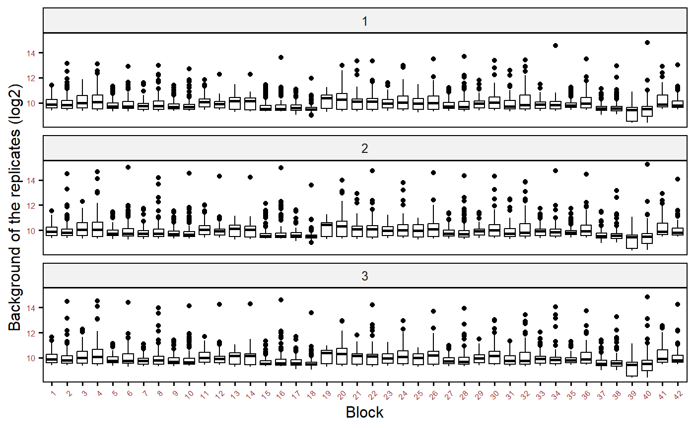
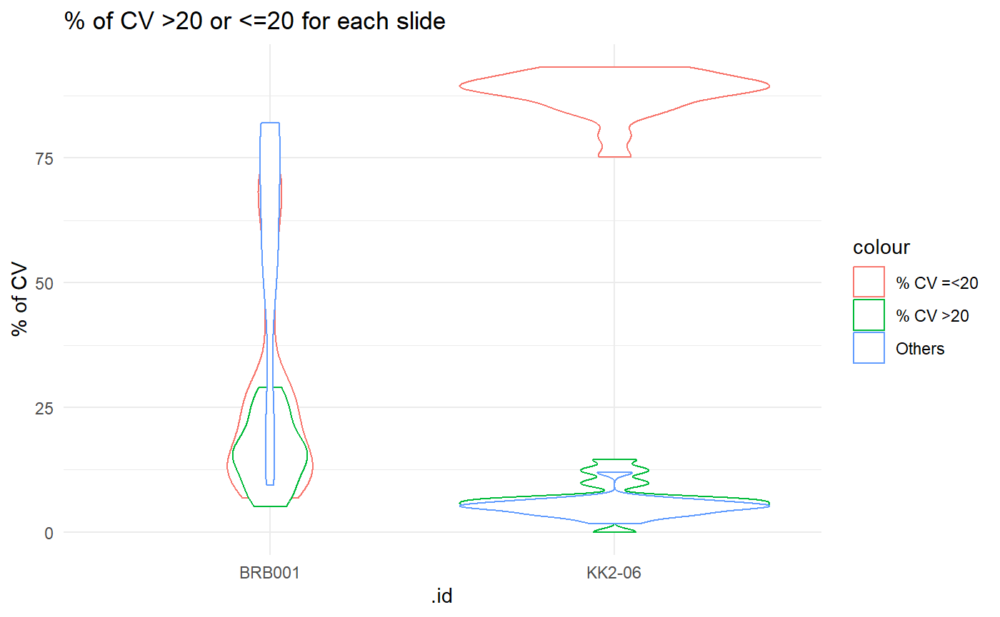
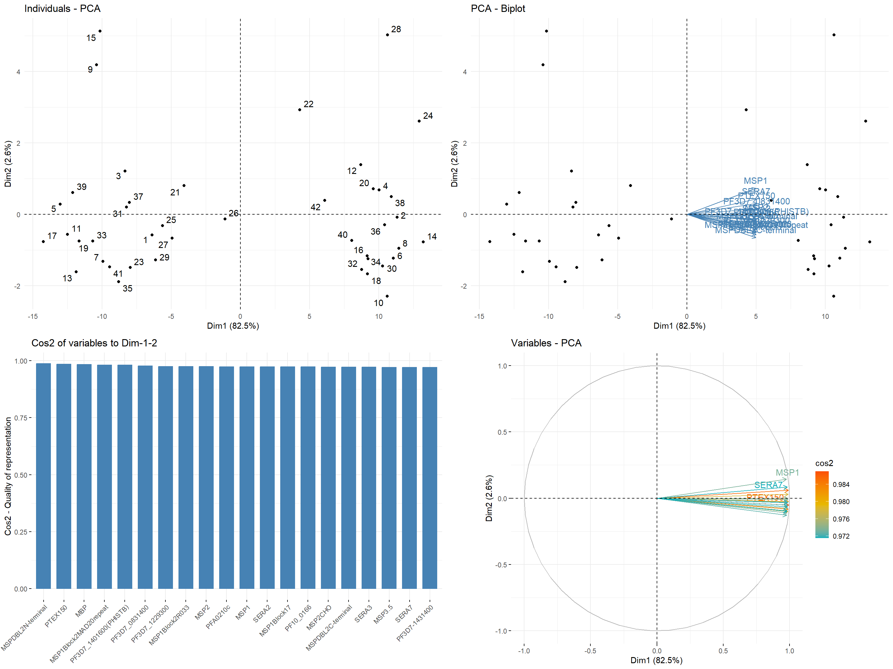

protGear vignette processing suite
Kennedy Mwai
18 November, 2022
Source:vignettes/vignette.Rmd
vignette.Rmd
library(ggpubr)
library(gtools)
library(purrr)
library(scales)
library(pheatmap)
library(data.table)
library(kableExtra)
library(gridExtra)
library(png)
library(knitr)
library(grid)
library(styler)
library(FactoMineR)
library(factoextra)
library(magick)
library(rlang)
library(GGally)
library(ggplotify)
library(remotes)
library(dplyr)
library(tidyr)
knitr::opts_chunk$set(echo = TRUE, message=FALSE,warning = FALSE,
fig.align = 'center',
dev = "png",
tidy='styler', tidy.opts=list(strict=TRUE))Introduction
General information
protGear is a package for protein micro data processing just before
the main analysis. The package loads the ‘gpr’ or
‘txt’ file format extracted by the quantification software
and merges this with the specific sample identifiers. The package
processes multiple files extracted batch by batch with their
corresponding sample identifier file. The sample identifier file has 2
variables ‘v1’ and ‘v2’ which indicate the
mini-array or block number and sample identifier respectively. The
‘gpr’ file and the corresponding sample identifier file
have the same file name. protGear also provides a web based \(Shiny^{(R)}\) platform for real time
visualization of the data processing.
In this vignette the general work-flow of protGear will be outlined by processing a sample dataset from a multicentre study Plasmodium falciparum Merozoite Protein Microarray. The multicentre study design motivated the development of the protGear suite.
The details of the methodologies are published here https://doi.org/10.1016/j.csbj.2021.04.044

Sample identifier file

sample ID file structure
Installation
To install protGear from BioConductor the following
commands in R
## install from BioConductor
if (!require("BiocManager", quietly = TRUE)) {
install.packages("BiocManager")
}
BiocManager::install("protGear")Importing data
The first part is to specify the parameters of the micro-array experiment to assist in processing the data. The parameters specified are
- channel - The scanner fluorescence output used to record the data. It can be green,red,blue among others with a specified number.
- chip_path - the folder where the sub folders of ‘gpr’ or ‘txt’ files are stored. This path contains sub folders with the array data, for example the sub folders for the different batches.
- totsamples - the number of samples in a slide or array.
- blockspersample - The number of blocks a sample it takes. In this example each sample occupies 2 blocks each with 384 spots.
- sampleID_path - the folder where the sample identifiers files are stored
- machine - The indicator for which machine was used to hybridize the samples if the experiment had more than one machine.
- date_process -the date of sample processing
The parameters “chip_path”, “channel” ,
“totsamples” and “sampleID_path” are
mandatory.
## specify the the parameters to process the data
genepix_vars <- array_vars(
channel = "635",
chip_path = system.file("extdata/array_data/", package = "protGear"),
totsamples = 21,
blockspersample = 2,
sampleID_path = system.file("extdata/array_sampleID/", package = "protGear"),
mig_prefix = "_first",
machine = 1,
## optional
date_process = "0520"
)The exact channel used should be checked in the header of the file
from the quantification software under Wavelengths.
header_gpr <- readLines(system.file("extdata/array_data/machine1/KK2-06.txt", package = "protGear"),
n = 40
)
header_gpr <- gsub("\"", "", header_gpr[1:32])
header_gpr[1:32]## [1] "ATF\t1\t\t\t\t\t\t\t\t\t\t\t\t\t\t"
## [2] "29\t31\t\t\t\t\t\t\t\t\t\t\t\t\t\t"
## [3] "Type=GenePix Export 3\t\t\t\t\t\t\t\t\t\t\t\t\t\t\t"
## [4] "DateTime=2017/09/05 17:17:47\t\t\t\t\t\t\t\t\t\t\t\t\t\t\t"
## [5] "Settings=\t\t\t\t\t\t\t\t\t\t\t\t\t\t\t"
## [6] "GalFile=C:\\Users\\rkimathi\\Desktop\\GAL FILE DATA.gal\t\t\t\t\t\t\t\t\t\t\t\t\t\t\t"
## [7] "PixelSize=10\t\t\t\t\t\t\t\t\t\t\t\t\t\t\t"
## [8] "Wavelengths=635\t\t\t\t\t\t\t\t\t\t\t\t\t\t\t"
## [9] "ImageFiles=Z:\\Multicenter study\\4_9_2017\\data\\BRB0001.tif 0\t\t\t\t\t\t\t\t\t\t\t\t\t\t\t"
## [10] "NormalizationMethod=None\t\t\t\t\t\t\t\t\t\t\t\t\t\t\t"
## [11] "NormalizationFactors=1\t\t\t\t\t\t\t\t\t\t\t\t\t\t\t"
## [12] "JpegImage=\t\t\t\t\t\t\t\t\t\t\t\t\t\t\t"
## [13] "StdDev=Type 1\t\t\t\t\t\t\t\t\t\t\t\t\t\t\t"
## [14] "FeatureType=Circular\t\t\t\t\t\t\t\t\t\t\t\t\t\t\t"
## [15] "Barcode=\t\t\t\t\t\t\t\t\t\t\t\t\t\t\t"
## [16] "BackgroundSubtraction=LocalFeature\t\t\t\t\t\t\t\t\t\t\t\t\t\t\t"
## [17] "ImageOrigin=0, 0\t\t\t\t\t\t\t\t\t\t\t\t\t\t\t"
## [18] "JpegOrigin=1670, 840\t\t\t\t\t\t\t\t\t\t\t\t\t\t\t"
## [19] "Creator=GenePix Pro 7.3.0.0\t\t\t\t\t\t\t\t\t\t\t\t\t\t\t"
## [20] "Scanner=GenePix 4300 [141110]\t\t\t\t\t\t\t\t\t\t\t\t\t\t\t"
## [21] "FocusPosition=0\t\t\t\t\t\t\t\t\t\t\t\t\t\t\t"
## [22] "Temperature=0\t\t\t\t\t\t\t\t\t\t\t\t\t\t\t"
## [23] "LinesAveraged=1\t\t\t\t\t\t\t\t\t\t\t\t\t\t\t"
## [24] "Comment=\t\t\t\t\t\t\t\t\t\t\t\t\t\t\t"
## [25] "PMTGain=400\t\t\t\t\t\t\t\t\t\t\t\t\t\t\t"
## [26] "ScanPower=100\t\t\t\t\t\t\t\t\t\t\t\t\t\t\t"
## [27] "LaserPower=0.55\t\t\t\t\t\t\t\t\t\t\t\t\t\t\t"
## [28] "Filters=Standard Red\t\t\t\t\t\t\t\t\t\t\t\t\t\t\t"
## [29] "ScanRegion=0,0,2200,7200\t\t\t\t\t\t\t\t\t\t\t\t\t\t\t"
## [30] "ScanArea=1\t\t\t\t\t\t\t\t\t\t\t\t\t\t\t"
## [31] "Supplier=\t\t\t\t\t\t\t\t\t\t\t\t\t\t\t"
## [32] "Flags\tNormalize\tAutoflag\tBlock\tColumn\tRow\tName\tID\tX\tY\tF635 Median\tB635\tB635 Median\tSNR 635\tF635 Median - B635\tIndex"The function check_sampleID_files() helps to check whether each micro array file has a corresponding sample identifier file. The sample identifier files are generated from the lab plate maps to match the corresponding samples on a specific slide.If the sample identifier file is missing, protGear automatically generates the id’s.
Spatial structure of slide
protGear offers a functionality to inspect the slide visually for any
strong spatial biases when the scan image is not available. However, we
recommend using the scanned image to visualize the spatial artefacts
that might not be recorded in the .gpr file. We include the
functions visualize_slide() and visualize_slide_2d() to check
the spatial structure. The functions are build on structure_plot() which shows
the block and mini-array structure of a slide.
Visualize the foreground MFI
Here we visualize the foreground MFI using the visualize_slide function
visualize_slide(
infile = system.file("extdata/array_data/machine1/KK2-06.txt", package = "protGear"),
MFI_var = "F635 Median"
)
Visualize the background MFI
Here we visualize the background MFI using the
visualize_slide_2d function
visualize_slide_2d(
infile = system.file("extdata/array_data/machine1/KK2-06.txt", package = "protGear"),
MFI_var = "B635 Median"
)
Import .gpr/txt data
Microarray data is imported using the read_array_files() function. The function accepts the following mandatory arguments;
-
filename- the name of the file which the data are to be read from. In this example a list of multiple files from a folder is used and passed to using purrr. -
data_path- The path where the file with the data is located -
genepix_vars- A list of specific definitions of the experiment design. See array_vars()
For this example I use the sub-folder 1 specified using
genepix_vars$paths[[1]] which is this path under vignette
folder
C:/Users/kmwai/AppData/Local/R/win-library/4.2/protGear/extdata/array_data/machine1.
#### read in all the datasets
### list all the file names under data folder
filenames <- list.files(file.path(genepix_vars$paths[[1]]),
pattern = "*.txt$|*.gpr$", full.names = FALSE
)
#' @___________________read_in_the_files_with_the_text_data_from_the_chip_____________________________
### read all the data files and save them in a list
data_path <- paste0(genepix_vars$paths[[1]], "/")
data_files <- purrr::map(
.x = filenames,
.f = read_array_files,
data_path = data_path,
genepix_vars = genepix_vars
)
data_files <- set_names(data_files, purrr::map(filenames, name_of_files))Background Correction
Background noise is caused by non-specific fluorescence such as auto-fluorescence of the glass slide or non-specific binding of parameters and reference substances. To cut down the effect of background noise we have included different approaches for background correction. First, we extract the background values, visualize and select the best background approach. We have implemented five different approaches;
- Local background subtraction
- Global background subtraction
- Moving minimum background subtraction
- Normal and exponential model (normexp)
- Log-linear background correction (Edwards)
In ‘.gpr’ files the Background column starts with a
‘B’ followed by the wavelength or channel. In order to
perform background correction, we extract the background mean
fluorescent intensities (MFI’s) using the function extract_bg() . The function
accepts the arguments iden which is the file identifier,
data_files a list of data objects with names utilised by
iden and genepix_vars defined using array_vars() function. We
utilise the purr::map function to extract the background
MFI of multiple data files.
## utilising the map package we process a number of files under data_files list
dfs <- names(data_files)
allData_bg <- purrr::map(.x = dfs, .f = extract_bg, data_files = data_files, genepix_vars)
allData_bg <- set_names(allData_bg, purrr::map(filenames, name_of_files))
allData_bg <- plyr::ldply(allData_bg)Foreground vs Background
Before selecting the best background correction approach the MFI signals are be inspected visually. In protGear we first utilise the function plot_FB() that graphs the background, BG_Median and foreground values, FBG_Median. On the protGear Shiny platform the visuals are interactive and you can identify the features or blocks with strong bias.
p1 <- plot_FB(allData_bg,
antigen_name = "antigen",
bg_MFI = "BG_Median", FG_MFI = "FBG_Median", log = FALSE
)
p1Background MFI by blocks
p2 <- plot_bg(
df = allData_bg, x_axis = "Block", bg_MFI = "BG_Median",
log_mfi = TRUE
)
p2
Background correction
After background visualization and selecting the best approach the array data are merged with their specific sample identifier files.
Note: Each
array file must have its own corresponding sample identifier
.csv file stored in array_vars() function under
sampleID_path. Check General information section.
The method of background subtraction selected is specified under method below. The background correction is performed by bg_correct() function.
Buffer spots
Buffer spots are specific to the experiment design and are not always included. Buffer spots are used to check for unexpected scanning artefacts. The buffer spots should have similar values in different slides. Some outliers are expected for buffer spots close sample spots or landmark. However you can specify the name of your control antigens here buffer_spot="buffer" if you do not have buffer spots.
buffer_transp <- purrr::map(.x = sample_ID_merged_dfs, .f = buffer_spots, buffer_spot = "buffer")
buffer_transp <- set_names(buffer_transp, purrr::map(filenames, name_of_files))
buffers <- plyr::ldply(buffer_transp)
plot_buffer(buffers, buffer_names = "antigen", buffer_mfi = "FMedianBG_correct", slide_id = ".id")Coefficient of Variation (CV)
To calculate the CV’s we utilise the cv_estimation() function with
a cv_cut_off specified , sample identifier variable and
antigen specified under sampleID_var and
antigen respectively. The replicate_var and
mfi_var identifies the variable with the replicate rank
generated and MFI’s values.
#' @________________________________calculated_cv_for_each_data_file_______________________________________
#' data without the selected mean for the best 2 CVs
dataCV <- purrr::map(
.x = sample_ID_merged_dfs, .f = cv_estimation, lab_replicates = 3,
cv_cut_off = 20,
sampleID_var = "sampleID", antigen_var = "antigen", replicate_var = "replicate",
mfi_var = "FMedianBG_correct"
)
lab_replicates <- 3
dataCV <- set_names(dataCV, purrr::map(filenames, name_of_files))
aa <- plyr::ldply(dataCV)
GGally::ggpairs(aa, aes(color = cvCat_all),
columns = paste(seq_len(lab_replicates)), title = "", axisLabels = "show"
) +
theme_light()Summary of CV values
Here we create a summary of the CV values for each sample/slide utilising the cv_by_sample_estimation() function. This helps to identify samples with high values of CV. On the protGear dashboard an interactive table is created to show the summary for each sample.
#' @________________________________summary_of_cv_for_each_sample________________________________________
#' creates summaries by cv's greater than 20 and less than 20
cv_cut_off <- 20
dataCV_sample <- purrr::map(
.x = dataCV, .f = protGear::cv_by_sample_estimation, cv_variable = "cvCat_all",
lab_replicates = 3
)
dataCV_sample <- set_names(dataCV_sample, purrr::map(filenames, name_of_files))
all_cv_sample <- plyr::ldply(dataCV_sample)
less_20 <- rlang::sym(paste0("CV <= ", cv_cut_off, "_perc"))
gt_20 <- rlang::sym(paste0("CV > ", cv_cut_off, "_perc"))
less_20_per <- rlang::sym(paste0("% CV <=", cv_cut_off))
gt_20_per <- rlang::sym(paste0("% CV >", cv_cut_off))
ggplot(all_cv_sample) +
geom_violin(aes(.id, `CV <= 20_perc`, color = "% CV =<20")) +
geom_violin(aes(.id, `CV > 20_perc`, color = "% CV >20")) +
geom_violin(aes(.id, Others_perc, color = "Others")) +
ylab("% of CV") +
theme_minimal() +
ggtitle("% of CV >20 or <=20 for each slide all repeats considered")Best replicates
We have implemented a function best_CV_estimation() to select the best replicates if an experiment has more than 2 technical replicates. This helps to select the less variable replicates.
#' @________________________________data_with_selected_best_2_CV_______________________________________
#' data with the selected mean for the best 2 CVs
dataCV_best2 <- purrr::map(
.x = dataCV, .f = best_CV_estimation, slide_id = "iden", lab_replicates = 3,
cv_cut_off = 20
)
## give the names to the returned list
dataCV_best2 <- set_names(dataCV_best2, purrr::map(filenames, name_of_files))
dataCV_sample_best2 <- purrr::map(
.x = dataCV_best2, .f = cv_by_sample_estimation,
cv_variable = "best_CV_cat", lab_replicates = 3
)
dataCV_sample_best2 <- set_names(dataCV_sample_best2, purrr::map(filenames, name_of_files))
all_cv_sample_best2 <- plyr::ldply(dataCV_sample_best2)On the violin below we observe that with selecting the less variable replicates , the percentage of the “good CV” values increases.
## plot only the CV perccentages
ggplot(all_cv_sample_best2) +
geom_violin(aes(.id, `CV <= 20_perc`, color = "% CV =<20")) +
geom_violin(aes(.id, `CV > 20_perc`, color = "% CV >20")) +
geom_violin(aes(.id, Others_perc, color = "Others")) +
ylab("% of CV") +
theme_minimal() +
ggtitle("% of CV >20 or <=20 for each slide")
Tag subtraction
Tag subtraction is applied for antigens containing purification tags.
A file with the specific TAG name for each antigen is loaded. The file
has the antigen,TAG and TAG_name and the TAG_name must be
part of the antigens listed.
tag_file <- read.csv(system.file("extdata/TAG_antigens.csv", package = "protGear"))
tag_antigens <- c("CD4TAG", "GST", "MBP")
batch_vars <- list(machine = "m1", day = "0520")Overview of the TAG file
tb1 <- data.frame(head(tag_file, n = 10))
tb1 %>%
kable() %>%
kable_styling()| antigen | TAG | TAG_name |
|---|---|---|
| AARP | 0 | CD4TAG |
| AMA1 | 0 | CD4TAG |
| ASP | 0 | CD4TAG |
| CD4TAG | 99 | NO_TAG |
| CLAG3.2 | 0 | CD4TAG |
| EBA140 | 0 | CD4TAG |
| EBA175 | 0 | CD4TAG |
| EBA181 | 0 | CD4TAG |
| ETRAMP10.2 | 0 | CD4TAG |
| GAMA | 0 | CD4TAG |
Subtracting the TAG values
The function tag_subtract() implements the TAG subtration by matching the TAG names with the corresponding TAG values.
#' @________________________________subtract_the_tag_values_______________________________________
#'
## tag subtract
## read in the KILCHip TAG file to substract GST-1, MBP -2 and CD4TAG - 0 file
dataCV_tag <- purrr::map(
.x = dataCV_best2, .f = tag_subtract,
tag_antigens = tag_antigens, mean_best_CV_var = "mean_best_CV", tag_file = tag_file,
antigen_var = "antigen",
batch_vars = batch_vars
)
dataCV_tag <- set_names(dataCV_tag, purrr::map(filenames, name_of_files))
dataCV_tag <- plyr::ldply(dataCV_tag)In this example here we plot a graph of antigens Tagged with GST before and after TAG subtraction.
aaa <- dataCV_tag %>%
filter(TAG_name == "GST")
aaa <- aaa %>%
dplyr::select(.id, sampleID, antigen, mean_best_CV, mean_best_CV_tag)
aaa <- aaa %>%
gather(measure, mfi, -c(.id:antigen))
ggplot(aaa, aes(as.factor(antigen), mfi, color = measure)) +
geom_boxplot(aes(fill = measure), alpha = 0.5) +
theme_light() +
xlab("antigen name") +
ggtitle("Before and after TAG subtraction") +
theme(axis.text.x = element_text(angle = 45, hjust = 1))Normalisation
To normalise the data, we create a matrix matrix_antigen
with all the data combined. We ensure the slide identifier is included
as row names of the matrix or we have a way to join them after
normalisation. The array_matrix matrix is used to hold
these parameters. In place of AMA1 in the example below you
use one of your features or antigen. We have implemented four different
normalisation techniques;
- \(Log_2\) normalisation
- Loess normalisation
- RLM normalisation
- VSN normalisation.
df_to_normalise <- dataCV_tag %>%
ungroup() %>%
dplyr::select(slide = .id, sampleID, sample_array_ID, antigen, mean_best_CV) %>%
group_by(sampleID, slide)
df_to_normalise$sample_index <- group_indices(.data = df_to_normalise)
###
to_normalise <- df_to_normalise %>%
ungroup() %>%
dplyr::select(-slide, -sampleID, -sample_array_ID) %>%
dplyr::select(antigen, sample_index, everything()) %>%
gather(variable, value, -(antigen:sample_index)) %>%
unite(temp, antigen) %>%
dplyr::select(-variable) %>%
spread(temp, value) %>%
as.data.frame(.)
### get the row names of the machine data
row.names(to_normalise) <- to_normalise$sample_index
# batch_all <- as.factor(paste0(to_normalise$machine,"/",to_normalise$day))
# machines <- as.factor(to_normalise$machine)
# day_batches <- as.factor(to_normalise$day)
## create the matrix to normalise
matrix_antigen <- to_normalise %>%
dplyr::select(-sample_index) %>%
as.matrix(.)
## create the matrix to hold the important parameters
## in place of AMA1 you use one of your features or antigen
array_matrix <- df_to_normalise %>%
filter(antigen == "AMA1") %>%
ungroup() %>%
dplyr::select(sample_array_ID, sample_index, slide)
control_antigens <- c("CommercialHumanIgG", "CD4TAG")The matrix_normalise() function
is used to normalise the data and returns a list of plots and a matrix
of normalised values. A plot is returned if
return_plot = TRUE otherwise only a matrix of normalised
values will be returned.
normlise_df <- matrix_normalise(matrix_antigen,
method = "vsn", array_matrix = array_matrix,
return_plot = TRUE, control_antigens = control_antigens
)
normlise_df$plot_normalisation
Compare normalisation methods
On the dashboard we compare the different normalisation techniques using the mutiple_plot() function after loading the data.
control_antigens <- c("CommercialHumanIgG", "CD4TAG")
## no normalisation
normalise_list_none <- matrix_normalise(
matrix_antigen = matrix_antigen,
method = "none",
array_matrix = array_matrix,
return_plot = TRUE,
control_antigens = control_antigens
)
names(normalise_list_none) <- c("matrix_antigen_none", "plot_none")
## log2 normalisation
normalise_list_log <- matrix_normalise(
matrix_antigen = matrix_antigen,
method = "log2",
array_matrix = array_matrix,
return_plot = TRUE,
control_antigens = control_antigens
)
names(normalise_list_log) <- c("matrix_antigen_log", "plot_log")
## vsn normalisation
normalise_list_vsn <- matrix_normalise(
matrix_antigen = matrix_antigen,
method = "vsn",
array_matrix = array_matrix,
return_plot = TRUE,
control_antigens = control_antigens
)
names(normalise_list_vsn) <- c("matrix_antigen_vsn", "plot_vsn")
## cyclic loess with log
normalise_list_cyclic_loess_log <- matrix_normalise(
matrix_antigen = matrix_antigen,
method = "cyclic_loess_log",
array_matrix = array_matrix,
return_plot = TRUE,
control_antigens = control_antigens
)
names(normalise_list_cyclic_loess_log) <- c(
"matrix_antigen_cyclic_loess_log",
"plot_cyclic_loess_log"
)
normalise_list_rlm <- matrix_normalise(
matrix_antigen = matrix_antigen,
method = "rlm",
array_matrix = array_matrix,
return_plot = TRUE,
control_antigens = control_antigens
)
names(normalise_list_rlm) <- c("matrix_antigen_rlm", "plot_rlm")
## create a list after normalisation
normalised_list <- c(
normalise_list_none,
normalise_list_log,
normalise_list_vsn,
normalise_list_cyclic_loess_log,
normalise_list_rlm
)
##
normalised_list_plot <- normalised_list[grepl("plot", names(normalised_list))]
Heatmaps
norm_df <- normlise_df$matrix_antigen_normalised
norm_df <- norm_df %>%
dplyr::select(-control_antigens)
p3 <- pheatmap::pheatmap(norm_df,
scale = "none", cluster_rows = FALSE,
main = paste("VSN", "Normalised Data"),
silent = TRUE
)
#-------
## if you want to save the file
# p3 <- ggplotify::as.ggplot(p3)
# p <- p3 + theme_void()
# ggsave(p ,
# filename ="heatmap.PNG" ,
# width = 16 , height = 12 ,
# limitsize = FALSE,
# dpi=200 )
#-------
p3
PCA analysis
norm_df <- normlise_df$matrix_antigen_normalised
res_pca <- prcomp(norm_df, scale = TRUE)
var <- get_pca_var(res_pca)
vars_visualise <- 20
# Visualize the PCA
## individuals contributing to the PCA
p1 <- fviz_pca_ind(res_pca,
col.var = "contrib", # Color by contributions to the PC
gradient.cols = c("#00AFBB", "#E7B800", "#FC4E07"),
repel = TRUE # Avoid text overlapping
) + theme_minimal()
# Select the top vars_visualise contributing variables
p2 <- fviz_pca_biplot(res_pca,
label = "var",
select.var = list(contrib = vars_visualise)
) +
theme_minimal()
# Total cos2 of variables on Dim.1 and Dim.2
p3 <- fviz_cos2(res_pca, choice = "var", axes = 1:2, top = vars_visualise)
# Color by cos2 values: quality on the factor map
p4 <- fviz_pca_var(res_pca,
col.var = "cos2",
gradient.cols = c("#00AFBB", "#E7B800", "#FC4E07"),
select.var = list(contrib = vars_visualise),
repel = TRUE # Avoid text overlapping
)
## combine the plots into one grid
## combine the plots into one grid
## combine the plots into one grid
p_pca <- gridExtra::grid.arrange(p1, p2, p3, p4, ncol = 2)
## If you want to save the file
# ggsave(p_pca ,
# filename ="p_pca.PNG" ,
# width = 16 , height = 12 ,
# units = "in",
# limitsize = FALSE,
# dpi=300)
p_pca## TableGrob (2 x 2) "arrange": 4 grobs
## z cells name grob
## 1 1 (1-1,1-1) arrange gtable[layout]
## 2 2 (1-1,2-2) arrange gtable[layout]
## 3 3 (2-2,1-1) arrange gtable[layout]
## 4 4 (2-2,2-2) arrange gtable[layout]Shiny application
Shiny is an R package that makes it easy to build interactive web apps straight from R. protGear has a built in user-friendly Shiny dashboard to assist in real-time processing and visualization. It provides five sequential steps for handling a data table of fluorescent intensities. The dashboard is launched as below from R or RStudio. To Install R: Open an internet browser and go to www.r-project.org.
protGear::launch_protGear_interactive()## R version 4.2.1 (2022-06-23 ucrt)
## Platform: x86_64-w64-mingw32/x64 (64-bit)
## Running under: Windows 10 x64 (build 19044)
##
## Matrix products: default
##
## locale:
## [1] LC_COLLATE=English_United Kingdom.utf8
## [2] LC_CTYPE=English_United Kingdom.utf8
## [3] LC_MONETARY=English_United Kingdom.utf8
## [4] LC_NUMERIC=C
## [5] LC_TIME=English_United Kingdom.utf8
##
## attached base packages:
## [1] grid stats graphics grDevices utils datasets methods
## [8] base
##
## other attached packages:
## [1] protGear_1.0.0 vsn_3.64.0 Biobase_2.56.0
## [4] BiocGenerics_0.42.0 limma_3.52.4 tidyr_1.2.1
## [7] dplyr_1.0.10 remotes_2.4.2 ggplotify_0.1.0
## [10] GGally_2.1.2 rlang_1.0.6 magick_2.7.3
## [13] factoextra_1.0.7 FactoMineR_2.6 styler_1.8.1
## [16] knitr_1.40 png_0.1-7 gridExtra_2.3
## [19] kableExtra_1.3.4 data.table_1.14.4 pheatmap_1.0.12
## [22] scales_1.2.1 purrr_0.3.5 gtools_3.9.3
## [25] ggpubr_0.4.0 ggplot2_3.4.0
##
## loaded via a namespace (and not attached):
## [1] backports_1.4.1 systemfonts_1.0.4 plyr_1.8.8
## [4] lazyeval_0.2.2 shinydashboard_0.7.2 splines_4.2.1
## [7] GenomeInfoDb_1.32.4 TH.data_1.1-1 digest_0.6.30
## [10] flexdashboard_0.6.0 yulab.utils_0.0.5 htmltools_0.5.3
## [13] fansi_1.0.3 magrittr_2.0.3 memoise_2.0.1
## [16] cluster_2.1.3 tzdb_0.3.0 readr_2.1.3
## [19] Biostrings_2.64.1 annotate_1.74.0 Kendall_2.2.1
## [22] R.utils_2.12.2 sandwich_3.0-2 svglite_2.1.0
## [25] pkgdown_2.0.6 colorspace_2.0-3 blob_1.2.3
## [28] rvest_1.0.3 ggrepel_0.9.2 textshaping_0.3.6
## [31] xfun_0.34 RCurl_1.98-1.9 crayon_1.5.2
## [34] jsonlite_1.8.3 genefilter_1.78.0 survival_3.3-1
## [37] zoo_1.8-11 glue_1.6.2 gtable_0.3.1
## [40] XVector_0.36.0 zlibbioc_1.42.0 emmeans_1.8.2
## [43] webshot_0.5.4 R.cache_0.16.0 car_3.1-1
## [46] abind_1.4-5 mvtnorm_1.1-3 DBI_1.1.3
## [49] rstatix_0.7.1 Rcpp_1.0.9 viridisLite_0.4.1
## [52] xtable_1.8-4 gridGraphics_0.5-1 flashClust_1.01-2
## [55] bit_4.0.4 preprocessCore_1.58.0 stats4_4.2.1
## [58] DT_0.26 htmlwidgets_1.5.4 httr_1.4.4
## [61] RColorBrewer_1.1-3 ellipsis_0.3.2 farver_2.1.1
## [64] pkgconfig_2.0.3 reshape_0.8.9 XML_3.99-0.12
## [67] R.methodsS3_1.8.2 multcompView_0.1-8 sass_0.4.2
## [70] utf8_1.2.2 labeling_0.4.2 tidyselect_1.2.0
## [73] later_1.3.0 AnnotationDbi_1.58.0 munsell_0.5.0
## [76] tools_4.2.1 cachem_1.0.6 cli_3.4.0
## [79] generics_0.1.3 RSQLite_2.2.18 broom_1.0.1
## [82] evaluate_0.18 stringr_1.4.1 fastmap_1.1.0
## [85] yaml_2.3.6 ragg_1.2.4 bit64_4.0.5
## [88] fs_1.5.2 KEGGREST_1.36.3 nlme_3.1-157
## [91] mime_0.12 R.oo_1.25.0 leaps_3.1
## [94] xml2_1.3.3 compiler_4.2.1 rstudioapi_0.14
## [97] plotly_4.10.1 affyio_1.66.0 ggsignif_0.6.4
## [100] tibble_3.1.8 bslib_0.4.1 stringi_1.7.8
## [103] highr_0.9 desc_1.4.2 lattice_0.20-45
## [106] Matrix_1.5-3 vctrs_0.5.0 pillar_1.8.1
## [109] lifecycle_1.0.3 BiocManager_1.30.19 jquerylib_0.1.4
## [112] estimability_1.4.1 bitops_1.0-7 httpuv_1.6.6
## [115] R6_2.5.1 affy_1.74.0 promises_1.2.0.1
## [118] IRanges_2.30.1 codetools_0.2-18 boot_1.3-28
## [121] MASS_7.3-58.1 assertthat_0.2.1 rprojroot_2.0.3
## [124] withr_2.5.0 GenomeInfoDbData_1.2.8 S4Vectors_0.34.0
## [127] multcomp_1.4-20 mgcv_1.8-40 hms_1.1.2
## [130] rmarkdown_2.18 carData_3.0-5 scatterplot3d_0.3-42
## [133] shiny_1.7.3